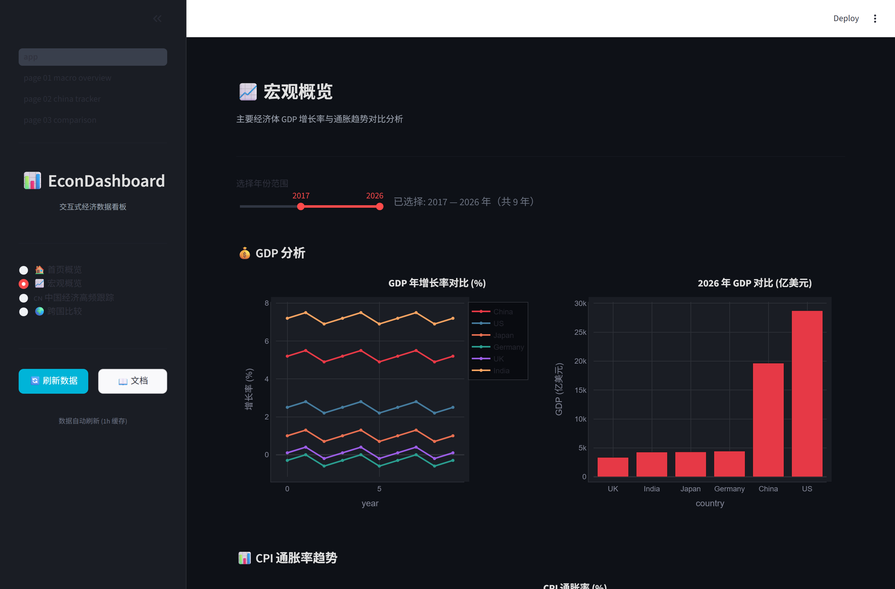

万值翔
华东师范大学 · 经济学 2027 届 · 计量经济学、量化金融与工业级数据可视化的从零实现开源实践
以下为本人从零实现的真实开源项目与工程能力沉淀 —— 计量经济学、量化金融、宏观经济与因果推断工具链；完整实习与岗位匹配见各岗位作品集。
↹ 一键切换岗位简历
📂 通用岗位作品集 →
0
计量·量化开源库
0
核心开源项目
0
GitHub 公开仓库
0
B站累计播放量
0
实证问卷样本
★
精选项目
// 从零实现的开源工具链 —— 计量 · 量化 · 宏观 · 因果推断 · 工业数据可视化；点卡片查看完整 README 与实时演示
 Streamlit · 已部署
Streamlit · 已部署CIcity-comparePython
city-compare城市分析
城市经济竞争力对标系统：50 城 8 维指标、雷达图与 K-means 聚类，Streamlit 交互式对标。

StreamlitECecon-dashboardPython
econ-dashboard经济看板
交互式经济数据看板：GDP / CPI / PMI 跨国对比与宏观趋势可视化，Streamlit 多页面应用。
QUquantlabPython
quantlab量化金融
量化工具箱：BS 期权定价、Greeks 风险度量、回测框架与组合分析，覆盖金融工程基础能力。
PYpyconometricsPython
pyconometrics计量经济
从零实现的计量经济学库：OLS / IV / DID / RDD 等因果识别方法与诊断，纯 Python 依赖。
🔴 Live Demo · 已部署
SFsmart-factoryHTML
smart-factory-dashboard工业看板
智能工厂全流程可观测与指挥平台：生产指挥中心大屏（10 屏）+ FastAPI 后端 + MES/SCADA/RTSP 真实数据接入层。
⚙
工业级可视化
// 独立深介绍 —— 智能工厂全流程可观测与指挥平台，含真实在线演示入口
🔴 Live Demo · 已部署
生产指挥中心 · 10 屏联动
smart-factory-dashboard
智能工厂能级提升 · 全流程可观测与指挥平台
面向真实工厂场景的工业级可视化系统：生产指挥中心大屏（10 屏联动）+ FastAPI 后端数据服务 + 对接 MES / SCADA / RTSP 摄像头的真实数据接入层，实现从设备层到指挥层的端到端可观测。
- 🖥 10 屏生产指挥大屏：OEE、产能、能耗、告警实时联动
- 🔌 真实数据接入：MES 工单、SCADA 点位、RTSP 视频流
- 🧩 全栈架构：HTML 大屏前端 + FastAPI 聚合服务
[ 技能与时间线 ]
// 技术栈能力矩阵 · 项目里程碑时间线 · 项目时间线
编程语言
框架与工具
专业领域
2026
计量与量化开源深化
80+ 计量 / 量化库从零实现，覆盖 OLS / IV / DID / DSGE / 期权定价 / Greeks 等，全部纯 Python 依赖，已上线 GitHub。
2025
量化与金融工程实践
国盛证券行业研究、门店风险监测；上证杯 92.5% 正确率、36% 净值增长，沉淀回测与定价代码。
2024
竞赛与科研起步
正大杯全国大赛 1,352 份问卷计量建模（Logistic p<0.001）；数学建模省二等，建立可复现研究流程。
2023 起步
经济学与编程启蒙
Python 计量经济学工具库从零构建，核心理念：每个算法亲手实现，拒绝调包凑数。
项目时间轴 · 按月里程碑
能力域分布 · 按开源仓库计数
★
开源精选
// 真实 GitHub 数据：★ star · ⑂ fork · 最近更新 — 全部从零实现，纯 Python 依赖
PYpyconometricsPython
pyconometrics计量经济
从零实现的计量经济学库：OLS / IV / DID / RDD 等因果识别方法与诊断，纯 Python 依赖。
QUquantlabPython
quantlab量化金融
量化工具箱：BS 期权定价、Greeks 风险度量、回测框架与组合分析，覆盖金融工程基础能力。
DSdsgepyPython
dsgepy宏观建模
一般均衡建模工具：RBC / NK / B-K 等 DSGE 模型的求解与脉冲响应分析。
MAmacrodatahubPython
macrodatahub宏观数据
宏观经济数据平台：对接 WB / FRED / 国家统计局等多源数据，统一接口与清洗流程。
POpolicysimPython
policysim政策模拟
政策模拟框架：ABM / DID / SC 多方法对比，支持产业政策与冲击的情景推演。
实时预览CIcity-comparePython
city-compare城市分析
城市对标分析：50 城 8 维指标聚类与可视化，用于区域与产业比较研究。
Streamlit
ECecon-dashboardPython
econ-dashboard经济看板
交互式经济数据看板：GDP/CPI/PMI 跨国对比与宏观趋势可视化，Streamlit 多页面应用。
EXexpress-consumptionPython
express-consumption实证研究
正大杯全国大赛 1,352 份问卷计量建模可复现代码（LPM / Logistic / 回归），完整数据处理 pipeline。
CAcausal-inference-mlPython
causal-inference-ml因果推断
因果机器学习方法：Double ML / Causal Forest，衔接计量经济学与现代 ML 估计。
MCmcp-financial-dataPython
mcp-financial-dataAI 工程
金融数据 MCP 服务器：把行情、财报、宏观等数据能力封装为 Agent 可调用的标准接口。
SFsmart-factory-dashboardHTML
smart-factory-dashboard工业看板
智能工厂全流程可观测与指挥平台：生产指挥中心大屏（10 屏）+ FastAPI 后端 + MES/SCADA/RTSP 真实数据接入层。